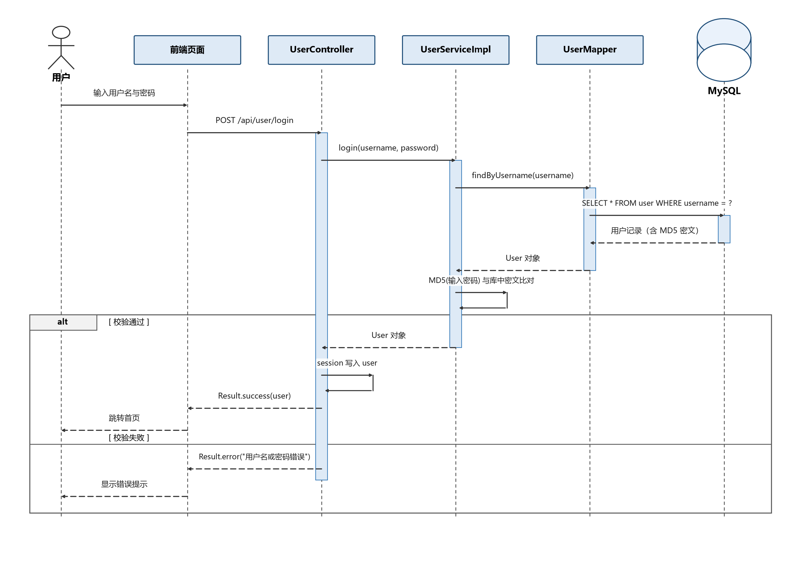
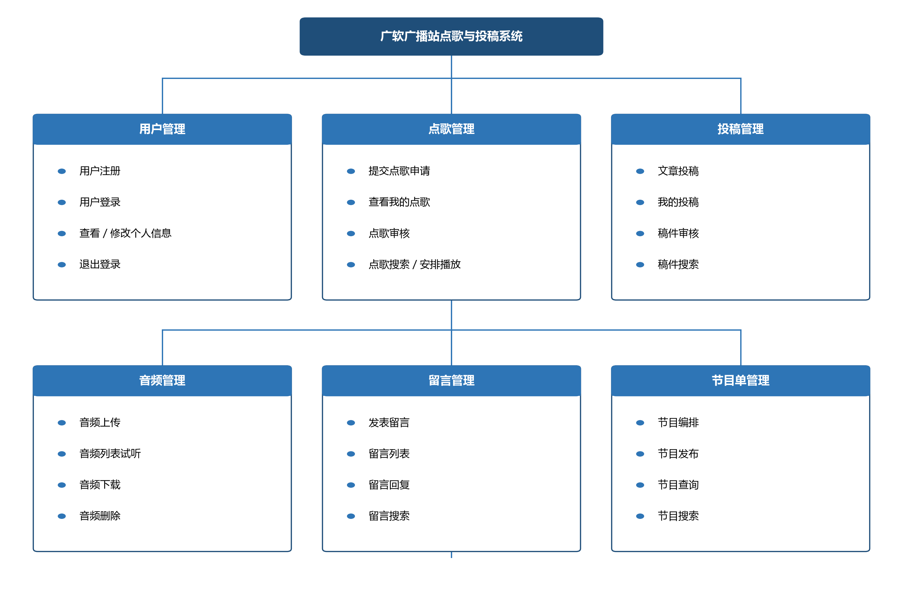
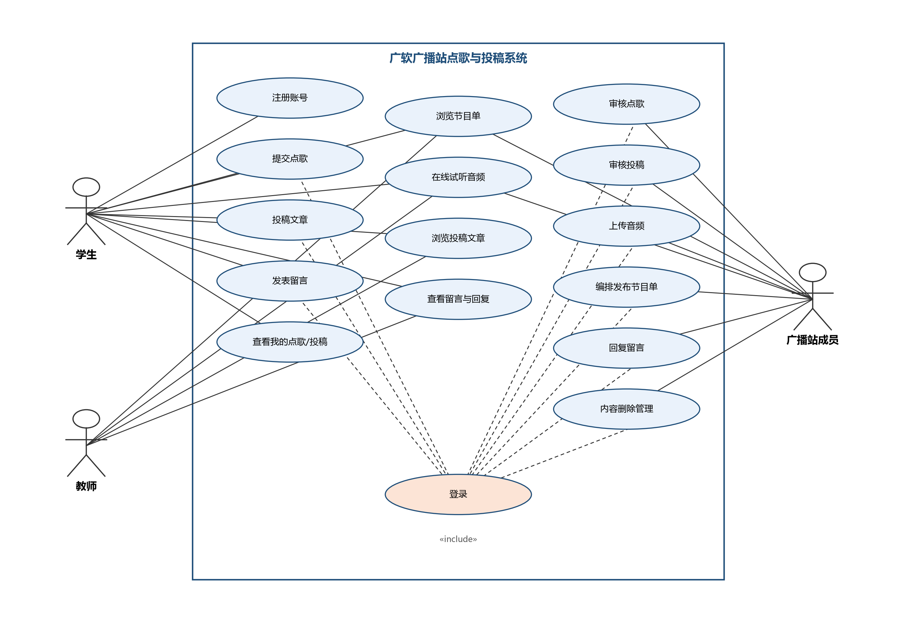
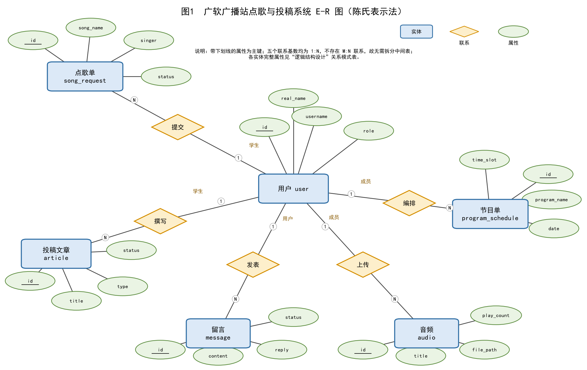

作业封面
课程代码：CW3104
课程名称：Web应用项目实训
任课老师：包玉琳
作业名称：Web应用项目需求分析与系统设计报告
作业完成人：
学号：
教学班：
递交日期：
签收人：
我申明，这份作业完全由我个人完成，并没有抄袭行为。我自己已经保留了这份作业的副本。
申明人(签名):
作业评分： 评阅老师签名：
一、作业目标
通过本次作业，使学生能够：
1.理解软件项目从需求分析到系统设计的完整流程，掌握“阶段输出即下一阶段输入”的工程方法；
2.掌握基于MoSCoW法则的功能模块划分与优先级排序方法；
3.学会使用图示化工具（功能模块图、用例图、时序图、E-R图）表达系统结构与业务逻辑；
4.掌握数据库概念设计、逻辑设计、物理设计与命名规范，能独立完成可执行的建表脚本；
5.掌握RESTful接口设计规范与接口文档要素，理解接口作为前后端“契约”的约束含义；
6.初步建立AI辅助开发的规范意识，形成可追溯、可验证的AI使用记录。
二、作业要求
以“从需求分析到系统设计”为主线，独立完成一个Web项目分析设计文档。文档内容须与后续课程设计保持同一项目，所写需求与设计将成为编码阶段的直接依据。
总体要求：
1.一人一项目，选题须为校园或生活场景下可落地的Web应用，不得选择纯前端静态页面或无业务数据的展示型项目；
2.本作业不含功能实现与系统测试，重点考察需求分析是否完整、设计是否合理可实现；
3.文档须按本作业给定的章节结构撰写，图表须有编号与图题，正文引用图表时须写明编号；
4.所有图表须自行绘制（可借助AI生成PlantUML/Mermaid代码后导入ProcessOn、draw.io渲染），不得直接盗用他人截图；
5.数据库建表脚本须在Navicat（或MySQL客户端）中实际执行通过，确保无语法错误；
6.作业须附《AI使用声明表》（见附录A），如实记录使用工具、环节、产出内容与人工修改情况。
注意：本作业是后续开发的基础，必须保证设计合理、可实现；凡需求与设计在编码阶段发生重大变更的，须同步回溯修改本文档并说明原因。
三、作业内容
本作业按毕业论文格式目录组织，对应下述四章内容。
章 | 章节名称 | 主要内容 | 对应课程进度 |
|---|---|---|---|
第1章 | 绪论 | 项目背景与意义、国内外同类系统现状、本文主要工作 | 第1讲 |
第3章 | 系统分析 | 可行性分析、业务分析、功能需求（含模块图/用例图/时序图）、非功能需求 | 第1、2讲 |
第4章 | 系统设计 | 总体架构、功能模块与接口设计、数据库设计 | 第5、7讲 |
四、提交要求
项目 | 说明 |
|---|---|
文档命名 | 学号-姓名-作业1-Web应用项目需求分析与系统设计报告.docx |
提交格式 | Word文档（.docx）；图表须嵌入正文，不得以超链接形式外链 |
提交路径 | 智慧树平台对应作业入口 |
作业周期 | 2周（具体查看智慧树提交时间） |
附件要求 | 接口文档html页面及资源（提交ftp，命名格式学号-姓名，压缩包） |
第1章绪论
1.1研究背景及意义
校园广播是高校校园文化建设的重要载体。广州软件学院广播站在午间、傍晚等固定时段面向全校师生播出音乐、新闻与互动节目，是传递校园资讯、服务师生生活的重要窗口。长期以来，广播站的点歌与投稿环节主要依靠纸质登记表、QQ群留言等方式完成，存在信息分散、审核过程缺少留痕、节目编排依赖人工核对、节目音频资料难以沉淀和检索等问题。
随着学校办学规模不断扩大，全日制在校生已达一万余人，广播站每周收到的点歌申请与投稿数量持续增长，传统人工处理方式在开学、军训、毕业季等业务高峰期容易出现漏审、错播、回复不及时等情况，师生的参与体验和广播站的运转效率都受到影响。
本系统旨在为校园广播业务搭建一个集点歌、投稿、音频管理、留言互动与节目单编排于一体的Web平台，实现申请在线提交、审核全程留痕、节目单统一发布、音频资料集中管理，从而减轻广播站成员的事务性工作量，提升师生参与度，丰富校园文化生活。
【写作要求】现状：现在这件事由谁、用什么方式在做，规模多大；问题：这样做有什么不便，尽量用数据或具体场景说明；契机：因此要做一个什么样的系统来解决。
【示例】某高校图书馆现有纸质藏书约12万册，注册读者约1.5万人，日均借还量约800册次。目前借还业务全部依靠人工登记台账完成：高峰期读者排队时间普遍超过15分钟；馆藏信息只能通过馆内检索终端查询，读者无法远程确认某本书是否可借；逾期图书靠人工翻查台账统计，催还效率低且容易遗漏。为解决上述问题，拟开发《图书馆管理系统》，将图书检索、借阅、归还、续借等核心业务线上化，将单次借还处理时间从人工登记的3~5分钟压缩至1分钟以内。
1.2国内外研究现状
通过对同类系统与相关产品的调研，可以将现有方案分为以下三类。
第一类是高校学生自研的校园广播点歌系统。这类系统多以点歌表单加后台审核为核心，支持按播出日期对点歌进行简单统计，在单一高校广播站有一定应用，但其功能普遍只覆盖点歌环节，不包含投稿、音频沉淀与节目单编排，模块较为单一，难以形成完整业务闭环。
第二类是网络电台与商业音乐平台，如网易云音乐、喜马拉雅等。这类产品具备成熟的音频上传、播放计数与评论互动能力，用户体验好，但其面向公开互联网场景设计，账号体系与内容审核流程和校园广播的实名登记、定时段播出需求不匹配，也无法支撑按校园节目单对每日节目进行编排。
第三类是部分高校建设的校园融媒体管理平台。这类平台统一汇聚校内多种媒体业务，功能全面，但体量庞大、建设与运维成本高，对于单一广播站的点歌、投稿业务而言过于厚重，难以快速落地。
综合来看，现有方案中面向校园广播站、同时覆盖“点歌—投稿—审核—节目单—音频沉淀”完整闭环的轻量级系统较少，本系统正是针对这一空白进行设计与实现。
【写作要求】分析对象须为可验证的真实系统；不足须具体（如“不支持按ISBN精确检索”“逾期规则不可配置”），不得只写“界面不够美观”这类主观评价。
1.3本文主要工作
本文围绕广软广播站点歌与投稿系统的设计与实现，主要完成以下工作。
（1）调研校园广播站的实际业务流程，完成需求分析，明确学生、广播站成员、教师三类角色的功能边界，并使用用例图、功能模块图与时序图对系统进行建模；（2）完成系统总体架构、接口与数据库设计，采用Spring Boot、MyBatis-Plus与MySQL技术栈实现用户、点歌、投稿、音频、留言、节目单六大功能模块；（3）完成点歌审核、投稿审核、音频上传下载、节目单发布、留言回复等核心功能的开发，并对系统进行功能验证。
第3章系统分析
3.1系统可行性分析
3.1.1技术可行性
系统后端采用Spring Boot 2.7、MyBatis-Plus 3.5与MySQL 8.0，均为成熟的开源技术，社区活跃、文档完善；开发使用IntelliJ IDEA、Maven与JDK 17，开发环境易于搭建。系统采用B/S架构，师生通过浏览器即可访问，无需安装专门的客户端，因此在技术上完全可行。
3.1.2经济可行性
系统所使用的Spring Boot、MyBatis-Plus、MySQL社区版等技术栈以及Git、Maven等工具均可免费获取，系统部署在校园内普通计算机或实验室服务器上即可运行，无需额外采购软硬件，建设与运行成本很低，经济上可行。
3.1.3操作可行性
系统的目标用户为在校师生与广播站成员，均具备基本的浏览器操作能力；系统以Web形式提供、无需安装客户端，界面按照实际业务流程设计，关键操作提供确认与错误提示，学习成本低，广播站成员经过简单说明即可完成审核、上传与编排工作，操作上可行。
3.2系统业务分析
系统的核心业务流程如下：学生注册并登录后，可以在线提交点歌申请，填写歌曲名称、歌手与点歌留言，也可以提交新闻、故事、诗歌等类型的投稿文章；广播站成员登录后，对待审核的点歌与投稿进行审核，审核通过的点歌结合每日节目单安排播出，审核通过的投稿可在节目中朗读或在平台展示；成员还可以上传节目音频、编排并发布每日节目单。师生可以浏览节目单、在线试听音频、浏览投稿文章并发表留言，由广播站成员对留言进行回复。
三类角色的业务定位各有侧重：学生主要进行点歌、投稿、留言以及查询本人的点歌与投稿记录；广播站成员负责内容审核、音频管理、节目单编排发布、留言回复与内容管理；教师主要浏览节目单、试听音频、浏览投稿并提出建议。用户登录这一核心流程的时序如图3-1所示。
3.2.1核心业务流程时序图

图3-1 用户登录流程时序图
3.3系统功能需求分析
按照MoSCoW方法对功能需求划分优先级，其中Must表示本期必须实现，Should表示应该实现，Could表示可以实现，Won't表示本期不会实现、列入后续规划。系统功能需求如表3-1所示，其中必须实现的功能约占全部功能的三分之二，保证核心业务闭环完整；系统功能模块如图3-2所示，系统用例如图3-3所示。
表3-1 系统功能需求清单
编号 | 模块 | 功能名称 | 功能说明 | 优先级 |
|---|---|---|---|---|
F-01 | 用户管理 | 用户注册 | 学生提交用户名、密码、真实姓名、学号等完成注册，密码经MD5加密后存储 | M |
F-02 | 用户管理 | 用户登录 | 校验用户名与密码，成功后将用户信息写入HttpSession | M |
F-03 | 用户管理 | 查看个人信息 | 登录用户查看本人资料，需登录 | M |
F-04 | 用户管理 | 退出登录 | 清除Session中的登录状态 | M |
F-05 | 点歌管理 | 提交点歌 | 学生填写歌曲名、歌手、点歌留言后提交，初始状态为待审核 | M |
F-06 | 点歌管理 | 我的点歌 | 学生查看本人点歌记录及审核状态 | M |
F-07 | 点歌管理 | 点歌审核 | 广播站成员审核点歌，填写通过或驳回结果并记录审核时间 | M |
F-08 | 点歌管理 | 点歌搜索 | 按歌曲名、歌手关键字与状态组合搜索点歌 | S |
F-09 | 点歌管理 | 安排播放 | 记录审核通过点歌的实际播放时间 | S |
F-10 | 投稿管理 | 文章投稿 | 学生提交新闻、故事、诗歌类型的稿件 | M |
F-11 | 投稿管理 | 我的投稿 | 学生查看本人投稿记录及审核状态 | M |
F-12 | 投稿管理 | 稿件审核 | 成员审核稿件，记录审核结果与审核时间 | M |
F-13 | 投稿管理 | 稿件搜索 | 按标题关键字与状态搜索稿件 | S |
F-14 | 音频管理 | 音频上传 | 成员上传节目音频，记录标题、文件大小等信息 | M |
F-15 | 音频管理 | 音频列表 | 展示在线音频，按上传时间倒序浏览 | M |
F-16 | 音频管理 | 音频下载试听 | 提供音频文件下载与在线播放 | M |
F-17 | 音频管理 | 音频删除 | 成员删除失效音频 | S |
F-18 | 留言管理 | 发表留言 | 登录用户发表留言 | M |
F-19 | 留言管理 | 留言回复 | 广播站成员回复师生留言 | S |
F-20 | 留言管理 | 留言搜索 | 按内容关键字搜索留言 | S |
F-21 | 节目单管理 | 编排节目单 | 成员编排每日节目单，填写日期、时段、节目名称、内容与歌单 | M |
F-22 | 节目单管理 | 发布节目单 | 发布节目单并记录发布时间 | M |
F-23 | 节目单管理 | 节目单搜索 | 按节目名称与日期搜索节目单 | M |
F-24 | 系统支撑 | 定时任务 | 定时统计音频播放量等运行数据 | C |
F-25 | —— | 在线直播 | 本期不实现音频实时直播，列入后续版本规划 | W |
F-26 | —— | 移动App与支付打赏 | 本期不开发移动客户端，不提供在线支付与打赏功能 | W |
【要求】表格行数按项目实际增删；每条功能须有唯一编号（F-XX），后续设计与测试引用同一编号；功能说明须写成可验证的具体规则，不得写“合理地管理”这类模糊表述；Must项占比须控制在70%以内。
3.3.1系统功能模块图

图3-2 系统功能模块图
3.3.2系统用例图

图3-3 系统用例图
3.4系统非功能需求分析
除功能需求外，系统还应满足性能、安全、可用性、可维护性与可靠性等方面的非功能需求，各项指标须可量化、可验证，具体内容如表3-2所示。
表3-2 系统非功能需求表
类别 | 需求描述 | 量化指标 | 验证方式 |
|---|---|---|---|
性能 | 页面与接口响应速度 | 常规页面打开不超过2秒；核心查询接口在校园网环境下响应不超过1秒 | 浏览器开发者工具与接口工具多次测量取均值 |
性能 | 并发承载能力 | 满足广播站日常业务量，支持约100名用户同时在线操作 | 使用JMeter进行并发测试 |
安全 | 密码存储 | 密码经MD5摘要后存储，数据库中不出现明文密码 | 检查数据库password字段内容 |
安全 | 访问控制 | 管理类接口仅广播站成员可调用，未登录或角色不符时返回错误提示 | 以不同角色账号交叉调用接口验证 |
安全 | 文件上传安全 | 音频上传限定文件格式，大小不超过50MB，文件以UUID重命名 | 构造非法格式与超大文件验证 |
可用性 | 浏览器兼容 | 支持Chrome、Edge主流浏览器最新两个大版本 | 在主流浏览器中逐项实测 |
可用性 | 操作易用性 | 点歌、投稿等核心操作3步以内完成，页面提示信息清晰 | 按照业务流程走查 |
可维护性 | 代码规范 | 采用分层架构，包结构清晰，关键逻辑配有注释 | 代码评审与走查 |
可靠性 | 数据可靠性 | 审核、发布等关键操作结果即时持久化，服务重启后数据不丢失 | 重启服务后核对业务数据 |
【要求】表中每一行须替换为与本项目规模相符的指标。若某指标无法验证，说明其为无效需求，必须重写。
第4章系统设计
4.1系统总体架构设计
系统采用B/S架构与经典的分层结构进行设计。后端基于Spring Boot 2.7.14搭建，持久层使用MyBatis-Plus 3.5.3，数据库采用MySQL 8.0并通过Druid连接池管理连接；前端使用HTML、CSS与JavaScript编写页面，通过HTTP接口与后端交互，后端以统一的Result结构返回数据。系统各层次的职责与关键实现如表4-1所示。
层次 | 职责 | 关键实现 |
|---|---|---|
Controller层 | 接收请求、接收与校验参数、调用Service、以统一Result结构返回 | @RestController、@RequestMapping、Result |
Service层 | 处理业务逻辑、控制事务 | @Service、@Transactional |
Mapper层 | 数据访问，提供基础CRUD与自定义查询能力 | MyBatis-Plus BaseMapper、Mapper XML |
公共模块 | 统一返回结构、错误码枚举、业务异常与全局异常处理 | Result、ErrorCode、BizException、GlobalExceptionHandler |
4.2系统功能模块设计
系统在功能需求的基础上按照高内聚、低耦合的原则划分为六个模块。用户模块以HttpSession为中心管理注册、登录与退出状态；点歌模块与投稿模块采用统一的“提交—待审核—审核”状态流转设计，以状态字段记录pending、approved、rejected，审核时同步写入审核时间；音频模块将音频文件以UUID重命名后存储到服务器磁盘，数据库仅保存标题、路径、大小等元数据；留言模块支持留言与成员回复；节目单模块按日期与时段编排节目，并维护草稿与已发布两种状态。各模块通过Service层对外提供业务能力，模块之间以用户标识进行逻辑关联、不直接耦合，便于独立开发与测试。
【写作要求】可对每个Must级模块按“模块职责→内部结构→对外接口→依赖关系”四段式展开，每模块200~400字。
4.3系统关键接口设计
系统按照业务划分为用户、点歌、投稿、音频、留言、节目单六个模块。接口URL采用“/api/模块/动作”的约定，其中/api为应用上下文路径，并以HTTP方法区分操作类型：POST表示注册、登录、提交等动作，GET表示查询，PUT表示修改与审核，DELETE表示删除。相较于严格的名词复数式REST风格，“模块加动作”的URL表意直接、与校园业务术语一致，便于课程项目的前后端协作与接口调试。
系统的登录状态基于HttpSession维护：用户登录成功后，其用户对象写入服务器端Session；需要身份识别的接口从Session中读取登录用户，或结合用户参数校验角色，未登录或角色不符时返回相应的错误提示。系统核心接口清单如表4-1所示，接口错误码约定如下表所示。
【规范自检】URL全小写、多单词用连字符连接；禁止出现/getUser、/deleteUser这类动词路径。
表4-1 核心接口清单
编号 | HTTP方法 | URL路径 | 功能说明 | 是否需鉴权 |
|---|---|---|---|---|
API-01 | POST | /api/user/register | 用户注册 | 否 |
API-02 | POST | /api/user/login | 用户登录，登录信息写入Session | 否 |
API-03 | GET | /api/user/info | 获取当前登录用户信息 | 是 |
API-04 | POST | /api/user/logout | 退出登录 | 是 |
API-05 | POST | /api/song/add?userId= | 学生提交点歌申请 | 是 |
API-06 | GET | /api/song/my?userId= | 查询本人的点歌记录 | 是 |
API-07 | GET | /api/song/list | 查询全部点歌（含学生信息） | 是 |
API-08 | GET | /api/song/pending | 查询待审核点歌 | 是（成员） |
API-09 | PUT | /api/song/audit/{id}?status=&userId= | 审核点歌 | 是（成员） |
API-10 | GET | /api/song/search?keyword=&status= | 按关键字与状态搜索点歌 | 否 |
API-11 | POST | /api/article/add?userId= | 提交投稿文章 | 是 |
API-12 | PUT | /api/article/audit/{id}?status=&userId= | 审核投稿稿件 | 是（成员） |
API-13 | GET | /api/article/list | 查询全部稿件 | 否 |
API-14 | GET | /api/article/search?title=&status= | 按标题与状态搜索稿件 | 否 |
API-15 | POST | /api/audio/upload | 上传音频（multipart表单） | 是（成员） |
API-16 | GET | /api/audio/list | 查询在线音频列表 | 否 |
API-17 | GET | /api/audio/download/{id} | 下载音频文件 | 否 |
API-18 | POST | /api/message/add?userId= | 发表留言 | 是 |
API-19 | PUT | /api/message/reply/{id}?reply=&userId= | 回复留言 | 是（成员） |
API-20 | GET | /api/message/list | 查询留言列表 | 否 |
API-21 | POST | /api/program/publish?userId= | 发布节目单 | 是（成员） |
API-22 | GET | /api/program/list | 查询节目单列表 | 否 |
API-23 | GET | /api/program/search?programName=&date= | 按名称与日期搜索节目单 | 否 |
接口错误码约定如下表所示。
错误码 | 含义 | 触发场景 |
|---|---|---|
200 | 操作成功 | 请求正常处理完成 |
400 | 请求参数有误 | 缺少必填参数或参数格式不合法 |
401 | 未登录或登录已过期 | Session中无登录信息或登录状态已失效 |
403 | 没有操作权限 | 角色不符，或调用了非本角色可用的接口 |
404 | 请求的资源不存在 | 访问了不存在的资源ID或文件 |
409 | 数据冲突 | 用户名已存在等重复数据场景 |
500 | 系统内部错误 | 服务端未预期的异常 |
1001 | 业务处理失败 | 业务流程未满足预期，如审核状态不合法 |
4.4数据库设计
4.4.1数据库概要设计
对系统业务数据进行抽象，得到用户、点歌单、投稿文章、音频、留言、节目单六个实体。其中，一个学生用户可以提交多条点歌单和多篇投稿文章，一个广播站成员可以上传多个音频、编排多个节目单、回复多条留言，一个用户可以发表多条留言，上述联系均为一对多联系。系统的E-R图如图4-1所示。

图4-1 系统 E-R 图
4.4.2数据库表设计
将概念模型转换为关系模型，并结合业务需要补充字段类型、约束与索引，得到系统的全部数据库表，各表字段设计如表4-2所示。
表4-2 数据库表设计
表名 | 字段名 | 类型 | 约束 | 说明 |
|---|---|---|---|---|
user | id | BIGINT | PK, AUTO_INCREMENT | 用户主键 |
user | username | VARCHAR(50) | NOT NULL, UNIQUE | 登录账号，唯一 |
user | password | VARCHAR(255) | NOT NULL | 密码MD5密文（32位） |
user | real_name | VARCHAR(50) | NULL | 真实姓名 |
user | student_id | VARCHAR(20) | NULL | 学号 |
user | role | VARCHAR(20) | NOT NULL | 角色：student/staff/teacher |
user | phone | VARCHAR(20) | NULL | 联系电话 |
user | VARCHAR(100) | NULL | 邮箱 | |
user | status | INT | NOT NULL, DEFAULT 1 | 状态：0禁用 1启用 |
user | create_time | DATETIME | NOT NULL, DEFAULT CURRENT_TIMESTAMP | 注册时间 |
song_request | id | BIGINT | PK, AUTO_INCREMENT | 点歌单主键 |
song_request | student_id | BIGINT | NOT NULL, INDEX | 点歌学生，逻辑外键→user.id |
song_request | song_name | VARCHAR(100) | NOT NULL | 歌曲名称 |
song_request | singer | VARCHAR(50) | NOT NULL | 歌手 |
song_request | message | VARCHAR(500) | NULL | 点歌留言 |
song_request | status | VARCHAR(20) | NOT NULL, DEFAULT 'pending' | pending/approved/rejected |
song_request | audit_time | DATETIME | NULL | 审核时间 |
song_request | play_time | DATETIME | NULL | 播放时间 |
song_request | create_time | DATETIME | NOT NULL, DEFAULT CURRENT_TIMESTAMP | 申请时间 |
article | id | BIGINT | PK, AUTO_INCREMENT | 稿件主键 |
article | student_id | BIGINT | NOT NULL, INDEX | 投稿学生，逻辑外键→user.id |
article | title | VARCHAR(200) | NOT NULL | 标题 |
article | content | TEXT | NOT NULL | 正文内容 |
article | type | VARCHAR(20) | NOT NULL | 类型：news/story/poem |
article | status | VARCHAR(20) | NOT NULL, DEFAULT 'pending' | pending/approved/rejected |
article | audit_time | DATETIME | NULL | 审核时间 |
article | create_time | DATETIME | NOT NULL, DEFAULT CURRENT_TIMESTAMP | 投稿时间 |
audio | id | BIGINT | PK, AUTO_INCREMENT | 音频主键 |
audio | staff_id | BIGINT | NOT NULL, INDEX | 上传成员，逻辑外键→user.id |
audio | title | VARCHAR(100) | NOT NULL | 音频标题 |
audio | file_path | VARCHAR(255) | NOT NULL | 文件存储路径 |
audio | file_size | BIGINT | NULL | 文件大小（字节） |
audio | duration | INT | NULL | 时长（秒） |
audio | play_count | INT | NOT NULL, DEFAULT 0 | 播放次数 |
audio | status | INT | NOT NULL, DEFAULT 1 | 状态：0下线 1上线 |
audio | create_time | DATETIME | NOT NULL, DEFAULT CURRENT_TIMESTAMP | 上传时间 |
message | id | BIGINT | PK, AUTO_INCREMENT | 留言主键 |
message | user_id | BIGINT | NOT NULL, INDEX | 留言用户，逻辑外键→user.id |
message | content | VARCHAR(500) | NOT NULL | 留言内容 |
message | reply | VARCHAR(500) | NULL | 回复内容 |
message | status | INT | NOT NULL, DEFAULT 1 | 状态：0隐藏 1显示 |
message | create_time | DATETIME | NOT NULL, DEFAULT CURRENT_TIMESTAMP | 留言时间 |
program_schedule | id | BIGINT | PK, AUTO_INCREMENT | 节目单主键 |
program_schedule | staff_id | BIGINT | NOT NULL, INDEX | 编排成员，逻辑外键→user.id |
program_schedule | date | DATE | NOT NULL | 节目日期 |
program_schedule | time_slot | VARCHAR(20) | NOT NULL | 时间段，如12:00-12:30 |
program_schedule | program_name | VARCHAR(100) | NOT NULL | 节目名称 |
program_schedule | content | TEXT | NULL | 节目内容 |
program_schedule | songs | TEXT | NULL | 播放歌单快照文本 |
program_schedule | status | VARCHAR(20) | NOT NULL, DEFAULT 'draft' | draft/published |
program_schedule | publish_time | DATETIME | NULL | 发布时间 |
program_schedule | create_time | DATETIME | NOT NULL, DEFAULT CURRENT_TIMESTAMP | 创建时间 |
【要求】此表为字段设计示例，须按项目实际补全所有表的字段设计。特别提示：时间字段统一用DATETIME/TIMESTAMP，金额字段统一用DECIMAL，禁止用VARCHAR存时间、用FLOAT/DOUBLE存金额。
4.4.3索引与约束设计
在物理结构设计上，表间关联采用“逻辑外键加普通索引”的方式：关联列建立普通索引，但不建立数据库级的外键约束，以降低批量导入与内容维护时表与表之间的耦合、提升操作灵活性，关联完整性由应用层校验保证；当业务需要数据库层强一致时，可执行建表脚本末尾以注释形式给出的物理外键语句。结合各类高频查询场景设计的索引如下表所示。
高频查询场景 | 建议索引 | 设计理由 |
|---|---|---|
登录时按用户名精确查询用户 | uk_username(username)，UNIQUE | 唯一约束同时满足等值查询需求 |
按角色筛选用户 | idx_role(role) | 支撑按学生、成员角色的查询 |
学生查询本人点歌 | idx_student_id(student_id) | 加速“我的点歌”关联过滤 |
成员按状态审核点歌 | idx_status(status) | 快速筛选待审核点歌 |
学生查询本人投稿 | idx_student_id(student_id) | 加速“我的投稿”关联过滤 |
成员按状态审核稿件 | idx_status(status) | 快速筛选待审核稿件 |
成员查询上传的音频 | idx_staff_id(staff_id) | 按上传成员过滤音频 |
按日期查询节目单 | idx_date(date) | 支撑按日期检索节目单 |
按用户查询留言 | idx_user_id(user_id) | 加速用户留言的关联查询 |
附录AAI使用声明表
工具名称 | 使用环节 | AI产出内容（含关键提示词） | 人工确认与修改 | 占比 |
|---|---|---|---|---|
豆包 | 需求分析与文档撰写 | 辅助梳理功能需求清单与章节文字；关键提示词：“根据点歌、投稿、审核的业务流程整理功能需求表，并按MoSCoW方法标注优先级” | 逐条核对功能与实际代码是否一致，删除与项目不符的条目，重写项目背景等章节 | 约15% |
豆包 | 数据库设计 | 辅助检查建表SQL的字段类型与索引；关键提示词：“检查六张表的字段类型、逻辑外键与索引设计是否合理” | 对照MySQL实际执行结果核对，保留原有命名与MD5口径 | 约10% |
豆包 | 接口文档 | 辅助生成接口文档初稿；关键提示词：“根据Controller源码整理接口的方法、URL、参数与响应示例” | 逐个接口与源码比对修正，补充错误码与鉴权说明 | 约10% |
【填写要求】“AI产出内容”须附关键提示词原文；“人工确认与修改”须写明你删除了哪些、补充了哪些、把哪些抽象表述改成了可验证规则。三者缺一不可，仅写“已检查”视为无效声明。
附录B提交前检查清单
提交前请逐项核对，全部确认后再提交：
□封面信息完整（作业名称、完成人、学号、教学班、递交日期均已填写）；
□项目背景采用“现状→问题→契机”三段式，无空泛套话；
□功能清单每条有唯一编号与MoSCoW优先级，Must占比不超过70%，已显式列出Won't；
□功能模块图、用例图、时序图、E-R图均已绘制并嵌入正文，图表编号与图题齐全；
□非功能需求已逐条量化，且写明验证方式；
□接口URL约定统一、表意清晰，接口文档要素齐全；
□数据库表满足3NF，字段类型（时间用DATETIME、金额用DECIMAL）与命名规范均已自检；
□建表脚本已在Navicat中执行通过，无报错；
□AI使用声明表已填写完整，含关键提示词与人工修改说明；
□文档已按“学号_姓名_作业1Web应用项目需求分析与系统设计报告.docx”命名。